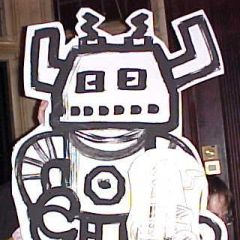

They will be your living dolls
Performance by the James Kochalka Puppet Theatre
2001
 They last visited us from Bristol for Caption 2001 with their tin hats and robots and monkeys created by Caption members.
This year
New costumes made by you the audience of tinfoil, fun-fur and bananas. If we're lucky, Andy may do the banana dance.
In tribute to Caption's friend and mine, Andy Roberts, a special puppet fight to the melodious tones of a Linus single; have hankies on standby, and wallets; the single will be in the charity auction!
Your chance to hit the performers! Bring and bash with your favourite implement, be it rubber chickens, foam fish or smacky sausages. Please bear in mind that we need to return the performers in one, reasonably undented piece.
Cardboard artshop. Make monkeys and robots alongside the experts, plus any other prop you feel they might be lacking.
Now one, two, three, altogether now: put down the gun kurt cobain...